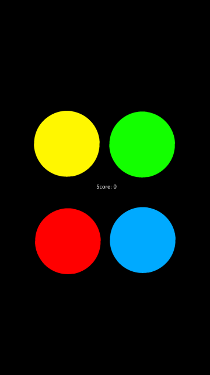
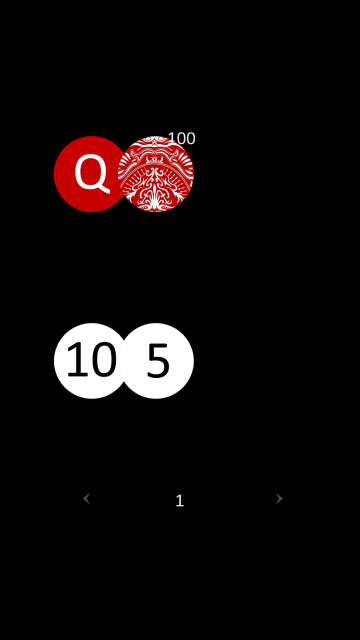
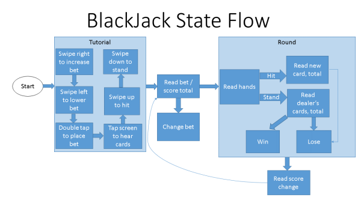

Audio Game Hub
Two audio games for the visually impaired developed in Unity3D by myself, Taylor Louie, Daniel Andrews and Sherry Xie for the AUT Research and Development project.
This was a really interesting project as someone who is interested in game development and design, because in standard games we rely so much on visuals to give information to the player. Having to design games that could be played without any visuals at all created a lot of limits on what types of games we could make, and how they had to play. However, these limitations made the design process really enjoyable, even if the games themselves are fairly simple.
Simon
Audio version of the memory game Simon.

Simon gameplay - buttons light up and play directional sound effects based on button location
Simon was our first game, and while it was fairly simple to code the primary challenge was learning Unity and C#, which I had never used before.
Black Jack
Audio version of the casino game Black Jack.

Black Jack gameplay - Designed with audio cues to let blind players understand what is happening and how to interact with the game
Black Jack was more challenging from a design standpoint because we have multiple inputs and more information that needs to be available to the player at any given time. It took numerous iterations and testing to develop a tutorial that taught non-sighted players how to play, in addition to the audio cues throught the game to describe the game state to players.
Black Jack State Flow Diagram:

State flow diagram I created to describe the game loop and what VA lines would be needed for the game